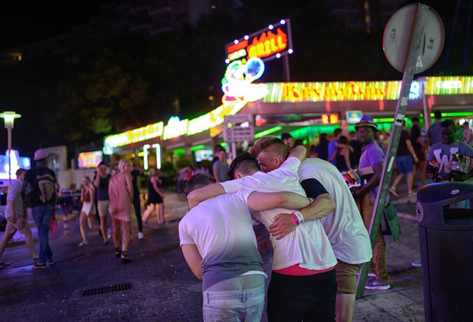

MAGALUF, Majorca — For a holiday photograph from this resort town on the island of Majorca, two tourists wiped a drunken friend’s face clean with a crumpled flier advertising a deal for all-you-can-drink cocktails. Then they hoisted his sagging body upright between them while another buddy clicked away with a smartphone.
No one paid much attention on the Punta Ballena, a neon-lit strip of bars, nightclubs, kebab joints and shops with names like Sorry Mom Tattoo. Then again, the parade of passers-by was not the intended audience. More important was to impress the folks back home by transforming a wild evening in Magaluf into a viral post on Facebook, Instagram or Twitter.
From posing naked at Machu Picchu to filming their dives from hotel balconies into courtyard swimming pools, travelers across the world have been indulging in what officials and travel experts describe as an epidemic of narcissism and recklessness, as they try to turn vacation hubs and historic sites into their personal video and photography props.
In recent months, there have been numerous instances in which tourists have insulted local sensibilities — and often caused extensive damage — in the course of taking enormous risks to try to capture themselves in a memorable travel moment that they can post on social media.
Officials in popular tourist destinations from Spain to Malaysia are starting to push back, and are considering tough new measures to control the most destructive behavior. These include imposing fines and jail sentences on unruly visitors, limiting group tourism and even turning the tables on the miscreants by posting photographs of their antics in a bid to publicly shame them.
But the appeal of selfie sticks and picture-taking drones is strong.
“It used to be fine to take a picture of the Eiffel Tower or Mount Everest, but that’s not good enough anymore,” said Jesse Fox, an assistant communications professor at Ohio State University who has studied the impulsive behavior of selfie-takers posting images on social networks. “Now tourists have to put themselves in the picture. It’s about ‘me,’ not about the place that I visit.”
That narcissism, she said, “results in these extreme, stupid behaviors.”
In recent months, there have been plenty of examples.
In March, two California women were arrested in Rome on charges of vandalism after they scratched initials into a wall of the Colosseum and snapped a photograph. In May, two tourists in Cremona, Italy, who had climbed an 18th-century marble sculpture of Hercules to take a photograph of themselves, ended up causing a crown on it to smash to pieces.
In June, three South Korean tourists in Milan crashed a drone into the city’s cathedral while taking aerial photographs.
Some of the incidents go beyond carelessness and show a lack of respect for local mores.
Malaysian officials recently jailed four tourists from Canada, the Netherlands and Britain for three days on charges of public indecency after they snapped nude photographs of themselves on Mount Kinabalu, on Borneo.
And Egyptian authorities expressed outrage this year when they discovered that Russian tourists had filmed a 10-minute pornographic video near the pyramids of Giza and the Sphinx.
This month, a YouTube video showing a tourist stalking a sentry at Windsor Castle near London went viral. When the tourist touched him, the soldier turned his rifle on him, bellowing: “Get back from the Queen’s Guard!” — perhaps not quite the social media moment the prankster had sought.
Some of the acts can also be self-destructive, as seen in the proliferation in Magaluf and other resort towns of “balconing” — when inebriated tourists jump between balconies or dive into courtyard pools, often resulting in injury or even death. A search of the term on YouTube turns up numerous categories, including Ibiza, Majorca, hotel and dead.
The almost daily reports of excessive tourist behavior can be explained partly by the sheer number of people on the move.
International tourist visits hit a record of 1.13 billion last year, according to the World Tourism Organization, a United Nations agency that tracks arrivals by air, sea and land. The growth has continued despite the tepid economy in places like the United States and Europe, driven in part by discount flights and a rising middle class in countries like Brazil and China. The Chinese ranked as the top tourism spenders last year, circulating $165 billion abroad.
Spending so much money has given some travelers a sense of entitlement, the authorities have said, and the Chinese government took the unusual step this year of creating a blacklist to block travel visas for some of its more offensive citizens — among them a passenger who threw hot water on a flight attendant in a dispute over seats.
Some experts say the obnoxious behavior reflects a modern, egotistic view of travel.
“Travel today is very cheap and people think they can do whatever they want in a globalized world,” said Mark Watson, executive director of Tourism Concern, a London organization that promotes ethical tourism, offering guidelines such as knowledge of and respect for local communities. “It’s changed from a holiday where you engage with different cultures to an opportunity to drink alcohol very cheaply and get very drunk.”
The ability to record and disseminate the wildest moments has contributed to the reputations of places like Magaluf, where “drunken tourism” — as it is called in Spain — has gotten so out of control that the newly elected mayor wants to recruit police officers from Britain to help manage British tourists who flock here during the summer. The city has also requested help from the Civil Guard, the Spanish equivalent of the National Guard.
Last year, a video surfaced of a game played by tourists in a Magaluf club that awarded a cocktail as a prize for performing oral sex. This season, a clip circulated of a half-naked dwarf whipping a groom-to-be at a stag party.
“The video was like an explosion,” Alfonso Rodríguez, the mayor of Calvià, which includes Magaluf, said of the oral-sex clip. A former schoolteacher, he attributes his election victory in May to a backlash generated by excessive tourist behavior.
“The reality has changed,” Mr. Rodriguez said. “The impact is that a bad image of Magaluf is multiplying on social networks, mobile phones, YouTube, Facebook, Twitter,” he said.
“This is damaging,” he added, “because the good image of Magaluf — its hotel investments, the beach, the surrounding region — is not news.”
Like Barcelona’s new mayor, who is freezing hotel construction permits after citizens protested tourist excesses there, Mr. Rodríguez wants to start redefining tourism. He is calling for a ban on the free drinks served by Magaluf’s hotels to attract visitors there on 10-day, $500 all-inclusive packages.
Magaluf has also imposed new fines ranging from 750 to 3,000 euros, or about $830 to $3,300, for behavior such as public drinking and balconing.
But countering Magaluf’s social media image is not going to be easy. Visitors like Ben Newberry, 26, a window washer from Wales, said he and his friends had come to Magaluf for the last two years. He said they were surprised when the police stopped him for carrying an empty cup.
“We’re not making any trouble,” said Mr. Newberry, who was strolling along the Punta Ballena with a stag party, dressed as a bearded church lady in lace and a gray wig. “It’s Magaluf, and Magaluf’s got a bad name. Everyone is just trying to have a good time.”
So far, though, police officers are trying to spread the message of toughness, without actually making arrests or issuing summonses.
In Granada, in southeast Spain, bars and hotels are banning bachelor and bachelorette parties because so many result in disturbances, as seen in the many videos of lewdness and drunkenness posted on YouTube and Facebook.
In Florence, Italy, the mayor, Dario Nardella, posted a warning on his Facebook page in June after someone broke off a finger from Pio Fedi’s statue of the Rape of Polyxena. Since then, selfie-seeking tourists have clambered up a sculpture of Dante Alighieri and have urinated in the dome of the city’s cathedral.
Mr. Nardella vowed to seek legislation to punish vandals of public art with severe prison sentences. “Whoever strikes culture,” he warned, “strikes at the heart of history and the identity of a community.”